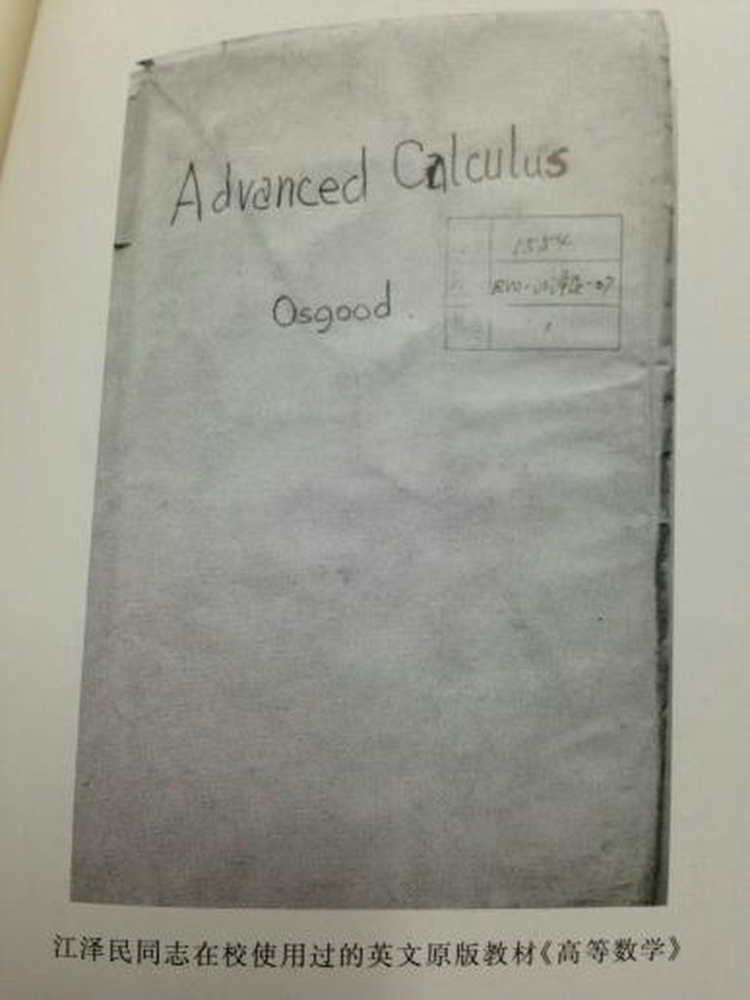
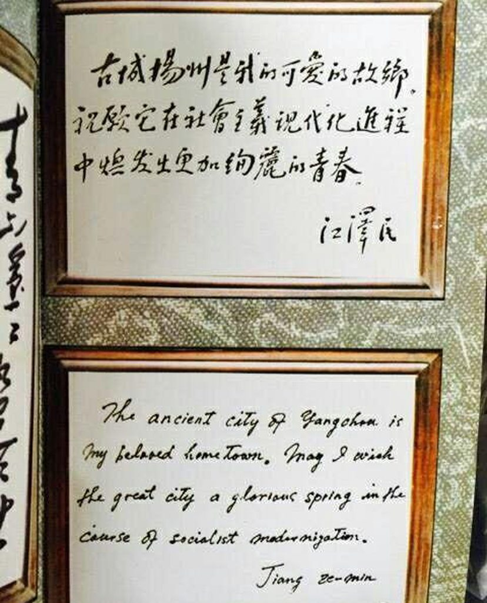
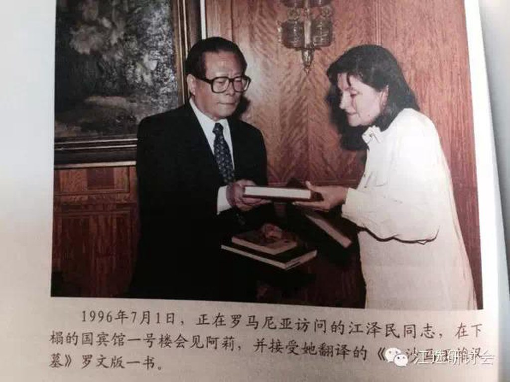
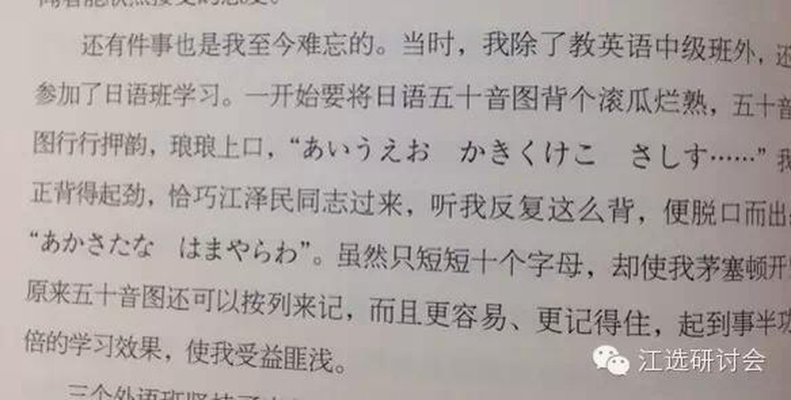
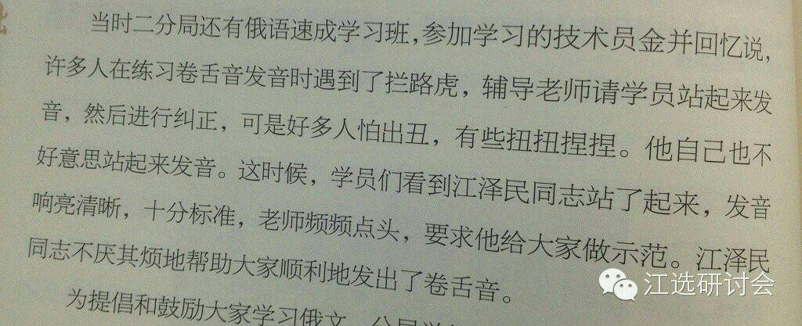

原国家主席江泽民究竟掌握了几门外语？“江选研讨会”有一篇文章考证历史，得出了竟有八门之多的结论。作者称，这是考据工作量最大的一次，形成初稿后请一些学外语的朋友帮忙纠正了内容特别是一些小语种表述上的错误，得到了大家热心的帮助，在此表示感谢。
每当背单词看到naive时，我总会会心一笑，这是我们的暗号。如果不是长者，我们怎能轻松掌握这个词汇。那一段短短几分钟的即兴讲话里融合了普通话、粤语和英语，充分展现了长者的语言才能。今天我们就来梳理下长者究竟掌握了几门语言。
江泽民到底能讲几门外语呢？说法不一。比较一致的是，江泽民精通英语和俄语，有人说他能够用流利、娴熟的英语与外宾直接对话，能够用英语和俄语写作。他在外事、对外经济管理部门和国外工作过，他粗通罗马尼亚文、法文和日文，能看懂这三种语言的书籍；有的报刊说他会的是英、俄、法、罗马尼亚语。总之，江泽民是一位精通外语，开放型、世界型的领导人。
江泽民的书确实不少。古今中外，经史文哲，少说也有二三千册吧。工作人员为他做了好几个书橱，原以为足够他放的了，结果还是堆砌得满满的。在上海工作时，市委大院里，藏书最多者，首推嗜书若渴的汪道涵，其次，便是江泽民了。
那么多书，绝非只是摆设，从早到晚，公务之余，只要有一点时间，除了听听音乐，逗逗孙子，他大多用来看书。遇上出差，他也总往随身带的包里装上几本，一上火车便一书在手，分秒必争。他的知识面很广，外语也有相当的水平，在“文革”中学《毛泽东选集》他读的就是英文版。有一次他与上海的大学生对话，有学生大谈美国的《独立宣言》如何如何，江泽民说：“你仔细读懂了《独立宣言》没有？我倒是可以用英语把《独立宣言》都背出来。”工作人员为他订了《华盛顿邮报》等几份英文报纸。他提出还想看一份俄文报纸，于是工作人员又补订了《真理报》。
我们不妨把标准定得严一点。只会几句寒暄不算，只有能顺利表达自己，与人交流，乃至通过语言对其文化产生共鸣才能算掌握。按此标准筛选，长者精通的是英语和俄语，罗马尼亚语次之。通晓西班牙语、日语，法语和德语一般交流没的说，此外还掌握了冷门的乌尔都语。
八门语言
>>英语
这无疑是长者掌握最好的一门的语言，堪称精通。从9岁学习英语，到如今90岁依旧沉溺其中。江真正将书本上的英语扎扎实实落根的是在上海交大的两年，其时江就读于工学院电机系，列举下他几位老师，朱物华教授，麻省理工硕士哈佛博士，张种俊院士，麻省理工博士后，知名学者顾毓琇麻省理工博士，「教学全用英语」江继续说道「教科书、实验报告、讲课、考试——这一切极大地提高了我们的语言技能」
 图为江在交大用的高等数学的英文原版教材
良好的英语功底加之好莱坞电影在当时上海滩的风靡，使得年轻的江能轻而易举地啃生肉，当时影院放映时的字幕，是刻好字用药水腐蚀出来的，放出来的效果是反光的，一闪一闪，看不清楚。「他挤时间看了美国电影《乱世佳人》和《魂断蓝桥》」
江喜欢用英语演讲，2000年在美中关系全国委员会等组织联合举行的午餐会上，他用英语发表演说，而更早的97年，江在哈佛大学英语演讲，而江也成为中国领导人「英语演讲第一人」。不仅在哈佛，他还在儿子的母校德雷克塞尔大学用英文讲话。
江展现英语的高光时刻是在2001年在上海，他用英语主持了APEC第9次领导人非正式会议对话会，并用英语宣读了《2001年APEC领导人宣言》，会上他与布什讲英语，与普京讲俄语，与小泉讲日语，游刃有余。
同时他的英文书法也写的不错，字体应该是chancery ltalic。

英文阅读方面，江订阅了几份英文报纸，其中之一是《华盛顿邮报》。文革初他为了姿势正确地学习英语，特意买了英文版的毛泽东选集看。江也重视听力训练，「每次出差途中，总看到他捧着一台在国外参加会议时买的半导体收音机，收听中央台的对外外语广播」他在热工所的老同事丁瑞芝回忆道。
其他如86年在交大背诵林肯葛斯底堡演讲、00年与华莱士历时四小时88回合的英语访谈这样的经典桥段就不再赘言了，毕竟长者的英语堪比母语，秀得太多太多，这里提一下逼格高一点的，李岚清曾在书中回忆长者恢复失传的托塞利小夜曲英文歌词的经过。
>>俄语
长者的俄语水平次之，俄语的学习是解放后，有据考察是51年江在英商肥皂厂，跟一位白俄秘书茜茜金娜学习俄语。两年后江调任一机部二分局，当时苏联援助不断涌进，为了看懂技术资料，江倡导成立了俄语学习班，开始了系统的学习。
55年，江被派往莫斯科，「在那里，江只要一有机会就练习俄语——在正式会议上，在与陌生人的邂逅中——他从来不觉得有什么不自在，他还鼓励那些沉默寡言的同事以他为榜样。」文革初，他为热工所技术人员组织讲座和课程，其中就有用俄语授课。95年访俄，江在专场音乐会上用俄语深情朗诵起西蒙诺夫的诗《等着吧，我会回来》。
98年，江造访俄罗斯科学院西伯利亚分院，为了节省时间，他决定不用翻译直接用俄语演说，值得一提的是这是演讲内容皆为科技题材，包括了「脱氧核糖核酸双螺旋结构」这种中文都很难讲顺的词。01年访俄，在莫斯科大学，江用俄语作了40分钟的演讲，畅谈了「中俄关系的美好未来」。上一位在莫斯科大学做演讲的是毛，「八九点钟的太阳」即出于此。02年江在圣彼得堡参观，用俄语吟诵了普希金著名诗篇《致凯恩》中的诗句。
多掌握一门语言还有助于撩菜，02年赖斯陪同布什访华时，江与她跳了一曲，「江似乎与赖斯女士配合得特别出色，因为她也会讲俄语。他们用俄语交谈，江告诉赖斯，她看上去比以前更年轻了」
文革前夜，江还曾经将他在苏联的实习老师特莱霍夫的著作《机械制造厂电能的合理使用》翻译成中文，该书于89年出版。
>>罗马尼亚语
罗语属于拉丁语系，语法有时态、人称等规律，而长者此前精通的英语和俄语，分属于日耳曼和斯拉夫两个语系，差别甚大，长者当时靠着俄语学习罗语的教材，一步步攻克了这门语言。
学习一门语言就像打开一扇新世界大门一样，江开始对罗马尼亚文学产生兴趣，包括一些诗集，他最为推崇罗马尼亚的著名诗人埃米内斯库，如《你为什么还不来？》、《望星》等诗都能背诵。后来访问罗时，江即兴背诵了《你为什么还不来？》，并即兴用钢琴弹起罗马尼亚古曲《妈妈昨夜把家还》。
精通多种语言的人起初可能仰仗天赋，但他们并非天才。只不过常人将语言学习视作一件苦差事，而他们却乐在其中。担任最高领导人后，江还经常与一些罗语翻译座谈，经常喜欢用罗语与他们对话，他说「我希望多接触罗语，不至于把罗语忘记，这也是一种休息方式」值得一提的是江作序的《领导干部外事用语丛书》收录了9种语言，其中包括罗语，另外8种都是国际主流语种，经过江的努力才收入罗语
学习罗语三十年后，江出席摩尔多瓦总统沃罗宁举行的晚宴，用罗语发表了热情洋溢的讲话。很多罗马尼亚朋友回顾这段历史时，自豪地说，世界上有三位国家元首会讲罗语，一位是罗马尼亚总统，一位是摩尔多瓦总统，一位是中国国家主席江泽民。
 图为江在罗访问时接受罗文版图书
>>日语
这门语言于长者有点敏感。39年底，日据时的扬州部分学校开始复课，日语成为学校的必修课。后来江自己回忆起来当时尽管每天都上日语课，但却总是勉强及格，「却从不后悔当时的倔强」江说，「要不是那时我是被迫学习日语的，今天我的日语就会讲得好一些」
江没说谎，后来五十年代在上海工作时，单位成立了日语学习班，江也报名参加了。刚在日语班时，一同事跟他开玩笑说江的名字日语发音应该叫Kezagumin（译音），江说不对吧，应该念Koutakumin（译音），后来这位同事去查，果然江是对的。
 图为江巧记日语五十音的记述
成为总书记后，一次江参观中央台对外日语演播室，对工作人员说了句日语，意为「我也多少知道点日语的」，访日时江也多次用日语进行日常交流。
>>法语、德语
法语是唯一没找到江系统学习证据的，只在一篇老同事回忆里提到70年代初去北京出差去拜见长者，发现他「半夜里还在走廊自学法语”，当时江任一机部外事局局长，负责对外援建的事宜，起早贪黑学习法语所言非虚。
后来，作为国家主席的江访法时在爱丽舍宫欢迎宴会上用法语致祝酒词；与西哈努克当面讨论「太皇」一词的法语翻译如何更为准确；参观摩洛哥胶合板厂法语向工人们问好，可见江的法语一般交流毫无问题。
06年，交大成立110周年，江来母校看望师生，当听到管理学院学生朱莉丽02~04年参加上海交大与法国中央理工大学的国际交流活动，大龄学长用法语问「你会法语吗？」，随后便与她寒暄起来。
和日语学习类似，由于当时德国电器顶尖，不少情报杂志都是德文，研究所成立了德语学习小组，江作为唯一一名领导加入了德语学习小组，后来江的老师回忆道「他很懂学外语的门道，紧抓发音不放，而且敢于开口」
四十年后在柏林出席德国经济亚太委员会举行的宴会，江以德语发表重要讲话。他还曾脱离讲稿，即席朗诵了歌德的诗歌《中德四季晨昏杂咏》中的一段「暮色徐徐下沉，景物俱已远遁。长庚最早升起，光辉柔美晶莹！……此时在那东方，该有朗朗月光」
>>西班牙语
江在访问智利期间做了长达四十分钟的演讲，除去激动人心的内容外，江这次演讲吸引人的地方还在于他自始自终用西班牙语进行演讲。
和其他所有掌握的语言不同，西语是他为了访问拉美国家临时学会的，当时他已经75岁，连续用七八个周末向外交部一位年轻译员学西班牙语。据那位后来成为大使的翻译同志讲，江学得特别认真，有时为了一个词的发音会练上十来遍。
造访古巴时，江步下舷梯，与卡斯特罗深情拥抱后，便用西语问候道「Gracias.Cómoestás，miviejoamigo(谢谢。你好吗？老朋友)」，更让卡斯特罗惊喜的是，随后的会谈中，江又用西班牙语做了五分钟的开场白。在欢迎宴会上，江还用西语演唱了《鸽子》，向卡斯特罗赠送七绝诗朗诵时用也是西语。
>>乌尔都语
1976年4月，江率领专家组到巴基斯坦检查援助项目，在这里工作了六周。巴方给他排了个司机，但司机只会讲乌尔都语，因为要指挥司机怎么走，江短短时间内掌握了这门冷僻的语言。时隔20年，江与巴国领导人会晤时讲了几句乌尔都语，让巴基斯坦报纸分外激动。访巴期间江还跟当年老同事回忆起说，至今还记得「一直走」叫「Seethaa」
当然，像江访问蒙古时用蒙古语向仪仗队说道「赛百诺！（你好）」，用意大利语唱《我的太阳》，这样的小花絮都没算长者真掌握了，毕竟严肃文学，有着严格的标准。
长者为什么能掌握那么多语言？
>>家庭环境
江祖父是扬州文化名人，「诗画医音融一炉」，著有《梦笔生花馆诗集》，六叔江上青被誉为「生花妙笔的江淹」，长兄江泽君是新中国江苏戏剧事业奠基人，七叔江树峰精通英俄法多国文字，老丈人曾留美，说一口流利的英语。这样的家教和环境对长者学习语言有极大的帮助。
>>speakmore
农大校长在一篇文章中曾回忆道，江会见了出席国际农业科技大会的部分外国专家时，英语俄语法语无障碍切换，其中有位专家说了句「江主席您会那么多国外语呀！」听了这句话后，江笑着说道「学外语就要speakmore，我这个人就敢说」天赋、享受学习的乐趣、以及必要的刻苦训练打通了一种良性循环，驱策着江成就了他人认为遥不可及的业绩。
>>还要有一位漂亮的老师
>>必要的生理结构

你们一定要学好英语
《他改变了中国》一书里曾记载到，当与外宾正式会议结束时，尤其是如果要举行午宴或者晚宴，江就会转而说英语，享受这种自然的交流。如果某些政府成员或者工作人员跟不上的话，他就会利用善意的公共压力来刺激他们学习。「所有在这里的人当中」，江会微笑着说，「只有X先生和Z先生听不懂我们说的话（英语）」
「江主席的外语能力是有名的」，前国务院新闻办主任赵启正说，他喜欢学习不同语言的新词汇，并和以外语为母语的人讨论词义的微妙差别。「一次，我们正在讨论哪种核反应堆最安全，我把‘pressure’这个词中的‘r’发音发错了，发成了一个喉音。江纠正了我的发音并问我为什么会犯这个错误。我说因为我的第一外语是德语。」
如果江的同僚们了解江司机的处境时，也不会觉得自己受到怎样的苛求。「我必须重新开始学习英语」，他的司机说，「不然在我为主席开车的时候就会感到窘迫。」
江甚至将对语言的苛求要求在其家人身上上，99年12月，江组织了一个家族聚会，欢度千禧年。库恩在江的传记里如实记载了这个场景「聚会开始之前，他回顾了20世纪的中国历史，也讲了江氏家族里一些人的往事。说完后，他把年轻的一代叫到身边，包括他的孙儿们，让他们把刚才他所说的翻译成英语。
江用英语和汉语向他们提问。如果他的问题用汉语提出，他们要先把问题翻译成英语，然后再用英语回答。如果他的问题用英语提出，那么他们直接用英语回答。他对小字辈能够流利使用英语感到欣慰，对自己差不多能跟上他们的水平也样感到高兴。就在晚餐开始前，江提了个令人吃惊的要求：所有人，不论长幼都必须说英语。」
知乎上曾有人问掌握多种语言是一种怎样的体验，我最喜欢的一个回答是「一种谦逊、平和心态。你的思维方式会更加多元化，你看一个问题的视角会变得更加宽阔，你会从原来的世界看到一个更大的世界，你也可以从一个新的世界里看到自己原来的世界。」
所以江曾在《领导干部一定要努力学习外语》一文中说「我们应该尊重世界多样性，了解和借鉴各国人民创造的文明成果，促进和加强同各国人民的交流交往。要做到这一点，需要努力学习外语」。语言就是世界观，江任期内难能可贵地不断向主流文明靠拢，反之则是固步自封、自命不凡的思维，所以一种人会劝读弟子规，一种人说还要读莎士比亚。
译匠编辑，内容来源：江选研讨会。